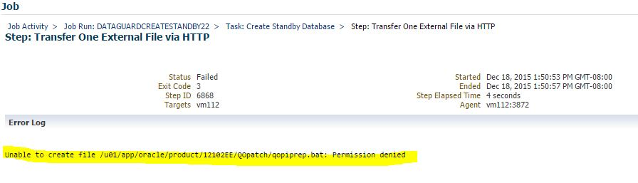

This was first published on https://www.dbi-services.com/blog/ocm-12c-preparation-data-guard-with-oem/ (2015-12-18)
Republishing here for new followers. The content is related to the versions available at the publication date.
.
I never create a Data Guard configuration from Enterprise Manager. It’s not that I don’t like GUI, but it is a lot easier to document it when doing from command line: copy paste the commands (actually I write the commands in the documentation and then copy to execute them so that I’m sure about the documentation). But for OCM 12c preparation, I want to be sure I can do it from OEM as it can be faster and prevent to miss a step.
However, sometimes it fails… Let’s see the Data Guard creation state after a failure on the final steps.
Ok, the job failed but after the standby creation:

for whatever reason (I don’t understand why you may want to copy external files to standby server. Better put them on a shared filesystem) it failed here.
However, the job is nearly done and I don’t want to restart it from scratch.
‘Create Standby Database’ includes the duplicate that is the longest step.
But OEM do not see the standby:
Let’s click on ‘Add Standby Database’ but then cancel:
and here is the Data Guard administration page:
the standby is there, which means that broker configuration is done.
But if I want to do something from there:
I can’t until both datbases are registered:
At that point, I’ll not waste time in Cloud Control because the broker is setup and most of operations can be done with simple commands
Let’s convert the physical standby to snapshot standby.
I check the syntax:
DGMGRL> help convert
Converts a database from one type to another
Syntax:
CONVERT DATABASE TO
{ SNAPSHOT STANDBY | PHYSICAL STANDBY };
then convert:
DGMGRL> convert database "CDB112" to snapshot standby;
Converting database "CDB112" to a Snapshot Standby database, please wait...
Database "CDB112" converted successfully
And now convert back to physical standby
DGMGRL> convert database "CDB112" to physical standby;
Converting database "CDB112" to a Physical Standby database, please wait...
Operation requires shut down of instance "CDB112" on database "CDB112"
Shutting down instance "CDB112"...
ORA-01017: invalid username/password; logon denied
Warning: You are no longer connected to ORACLE.
Please complete the following steps and reissue the CONVERT command:
shut down instance "CDB112" of database "CDB112"
start up and mount instance "CDB112" of database "CDB112"
Argh… I connected / as sysdba…
Let’s do it again:
DGMGRL> connect sys/oracle
Connected as SYSDG.
DGMGRL> convert database "CDB112" to physical standby;
Converting database "CDB112" to a Physical Standby database, please wait...
Operation requires shut down of instance "CDB112" on database "CDB112"
Shutting down instance "CDB112"...
Database closed.
Database dismounted.
ORACLE instance shut down.
Operation requires start up of instance "CDB112" on database "CDB112"
Starting instance "CDB112"...
ORACLE instance started.
Database mounted.
Continuing to convert database "CDB112" ...
Database "CDB112" converted successfully
Here it is.
The configuration created by OEM is in MaxPerformance with ASYNC log shipping, which is not ok for FSFO
(‘show database verbose’ if you don’t remember the properties)
DGMGRL> edit database "CDB112" set property LogXptMode='SYNC';
DGMGRL> edit database "CDB111" set property LogXptMode='SYNC';
DGMGRL> edit configuration set protection mode as maxavailability;
Second requirement is to be able to flashback datbases to reinstate
CDB111 SQL> alter database flashback on;
DGMGRL> edit database "CDB111" set property FastStartFailoverTarget='CDB112';
DGMGRL> edit database "CDB112" set property FastStartFailoverTarget='CDB111';
DGMGRL> edit database "CDB112" set state='apply-off';
CDB112 SQL> alter database flashback on;
DGMGRL> edit database "CDB112" set state='apply-on';
Then I can enable FSFO (‘help enable’ if you don’t remember the command)
DGMGRL> ENABLE FAST_START FAILOVER
Enabled.
DGMGRL> start observer
Let’s crash the primary:
DGMGRL> show configuration
Configuration - CDB111_vm111
Protection Mode: MaxAvailability
Members:
CDB111 - Primary database
CDB112 - (*) Physical standby database
DGMGRL> shutdown abort
ORACLE instance shut down.
and here is what I can see at the observer:
23:28:03.00 Friday, December 18, 2015
Initiating Fast-Start Failover to database "CDB112"...
Performing failover NOW, please wait...
Failover succeeded, new primary is "CDB112"
23:28:34.34 Friday, December 18, 2015
failover is done.
And then when restarting the failed server:
23:54:51.34 Friday, December 18, 2015
Initiating reinstatement for database "CDB111"...
Reinstating database "CDB111", please wait...
Reinstatement of database "CDB111" succeeded
23:55:18.93 Friday, December 18, 2015
This is FSFO: no manual intervention, automatic failover and automatic reinstate.
This is the way I take the Enterprise Manager: I use it as long as it works well (save time when not knowing the syntax, save fingers typing).
But on any issue, let’s go back to the basics or I’ll waste time troubleshooting the GUI in addition to the issue.
{kind=link}
{kind=link}
{kind=link}
{kind=link}
{kind=link}
{kind=link}
{kind=link}